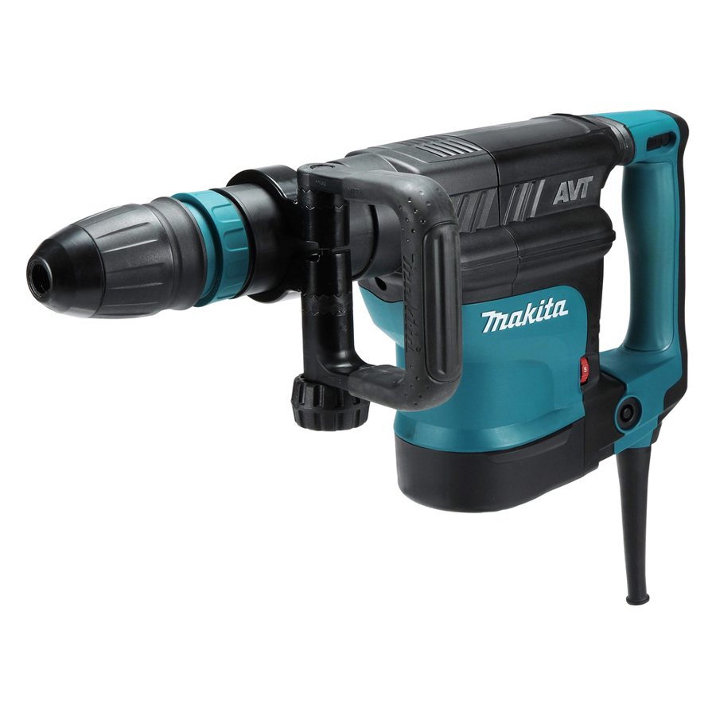
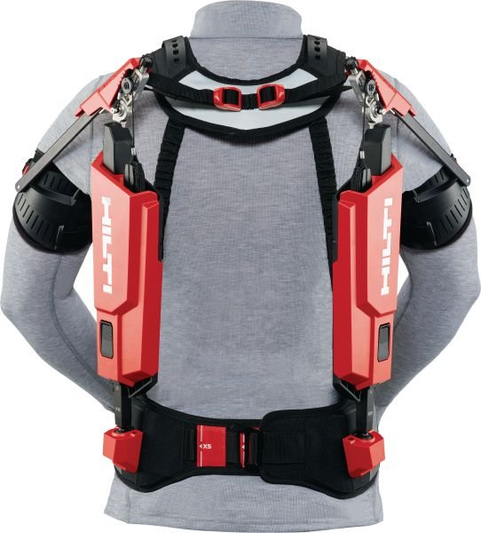
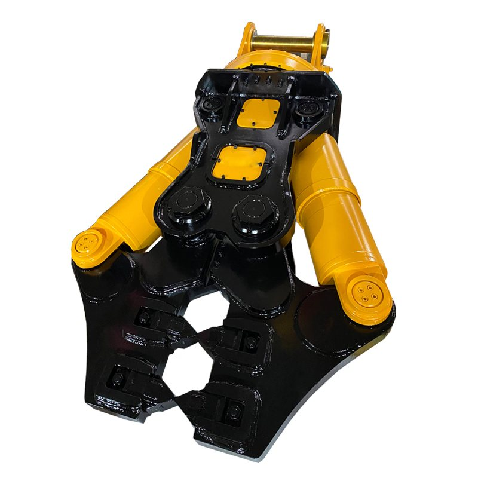
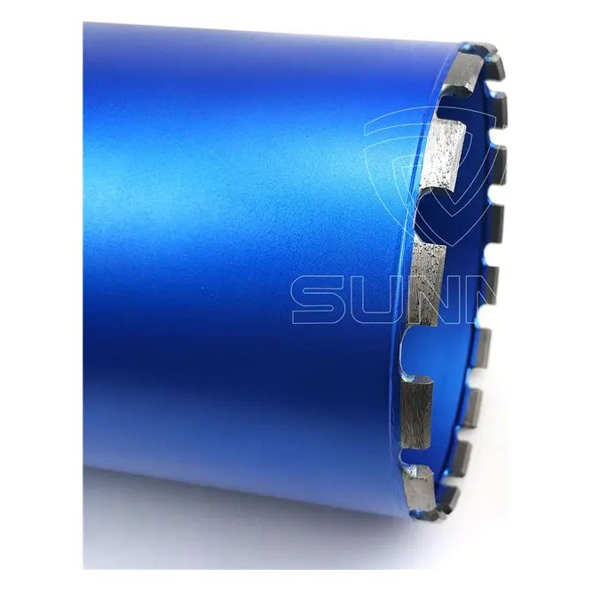
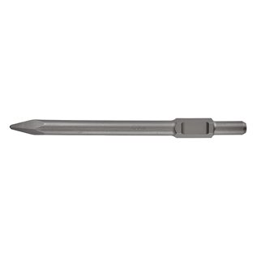
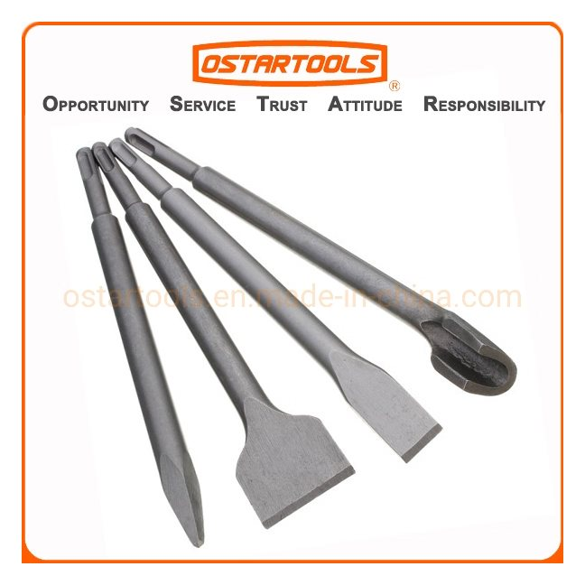
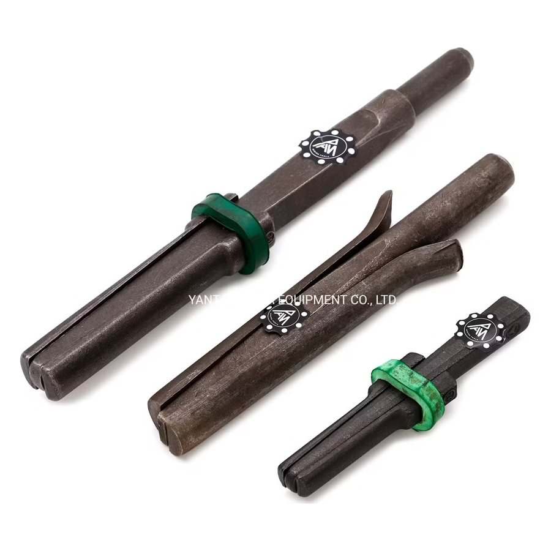
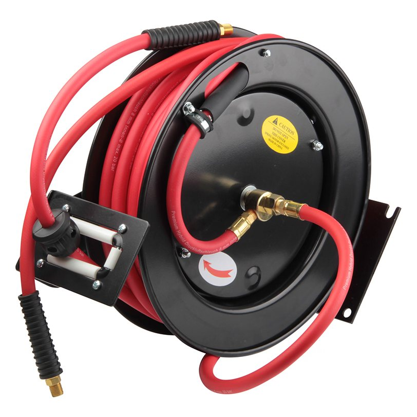
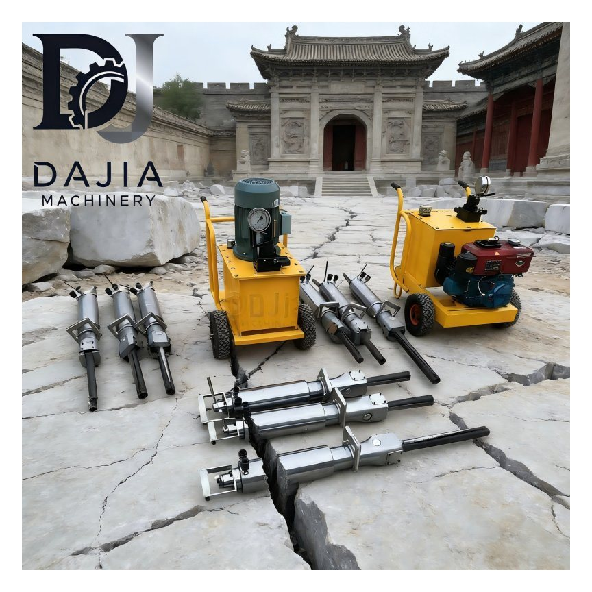

图片仅供参考，展示产品类型。
拆除与凿破设备
10公斤电动凿锤 (SDS-max,1,500 W)
中型SDS-max凿锤,用于拆除作业中的混凝土、砖石和找平层破除以及开槽和开洞。
10公斤凿锤填补了轻型凿锤与15公斤破碎锤之间的空缺:能快速破除混凝土、砖石和厚找平层,在肩部以上仍便于操控。1,500 W电机和约16–17 J级别的冲击机构专为拆除作业中的轮班使用而设计,SDS-max夹头保证了钎头在德国的广泛可购性。专业用户期望有效的减振、有申报的振动值,以及碳刷、冲击机构和手柄等易损件的备件供应。
技术参数
| 工具夹头 | SDS-max |
|---|---|
| 额定输入功率 | 1,500 W |
| 单次冲击能量 | 约 16–17 J |
| 重量 | 约 10–11 kg |
| 额定电压 | 230 V / 50 Hz |
| 供货范围 | 尖钎和扁钎、辅助手柄、工具箱 |
| 海关编码（HS） | 84672985 |
欧盟标准与法规
2006/42/EG机械指令(CE标志)EN 62841-2-6手持式电动工具——锤类的特殊要求2000/14/EG户外设备噪声指令(声功率级,噪声标识)EN ISO 28927-10手传振动测量——冲击类工具EN 55014-1电磁兼容——发射GSGS安全认证(自愿性,市场普遍期望)
搭配产品


本类别其他产品

15公斤电动破碎锤 (30毫米六角柄)用于混凝土、墙体和地面破拆的重型电动破碎锤,配30毫米六角柄夹头。

250毫米金刚石取芯钻机 (含钻架)配2,200 W电机和钻架的湿/干两用取芯钻机,可在混凝土和砖石中钻取最大250毫米的孔。

移动式柴油螺杆空压机,约5 m³/min (185 cfm),7 bar柴油驱动的拖挂式工地空压机,为无电网接入的工地上的气动锤、喷砂和钻孔设备提供压缩空气。

SDS-max电动凿锤,5–11公斤 (1,100–1,500 W)便于操作的SDS-max凿锤,用于室内拆除和改造中的瓷砖、抹灰、找平层和砖石拆除。

电动金刚石绳锯机 (用于混凝土和钢筋混凝土)用于低震动切割任意尺寸钢筋混凝土构件的电动绳锯机。

用于头顶作业的被动式肩/臂外骨骼靠弹簧助力、无需电池的外骨骼,在肩部以上作业时为手臂减负。

5公斤电动凿锤 (1,100 W,轻型)用于室内装修中瓷砖、抹灰和找平层作业的轻型凿锤,易于操控、不易疲劳。

35公斤电动破碎锤 (2,000 W,六角柄,重型)配2,000 W电机的重型电动破碎锤,用于基础、钢筋混凝土和工业地坪的拆除。

20公斤气动破碎锤 (风镐,5–6.3 bar)20公斤级手持式气动破碎锤,无需电网即可破碎混凝土、沥青和砖石。

氧乙炔气割成套设备 (含割炬、减压器、软管)用于钢材火焰切割的成套设备:割炬、氧气和燃气减压器、软管及收纳箱。

用于钢梁的液压拆除剪 (挖掘机属具)作为挖掘机属具的液压剪,用于拆除作业中剪断钢梁、型材和管材。

破碎锤支架 (破碎锤固定支撑架)支撑并引导重型破碎锤的钢制支架——在凿地面和墙面时减轻手臂和腰背负担。

金刚石湿式取芯钻头 Ø 250 mm，1 1/4″ UNC 接口，有效长度 450 mmØ 250 mm 湿式金刚石取芯钻头，1 1/4″-7 UNC 接口，有效长度 450 mm，适用于钢筋混凝土，是取芯钻机的易损件。

30 mm 六角柄电镐凿子套装 （尖凿、扁凿、宽扁凿, 410 mm）适用于电镐的 30 mm 六角柄尖凿、扁凿和宽扁凿套装，包含零售市场上通常缺少的宽扁凿。

拆除用水炮 / 抑尘机 （雾炮），射程 25–30 m，3.5 kW，36 个喷嘴风机驱动雾炮，配 36 个不锈钢喷嘴，射程 25–30 m，水平回转 340°：每分钟仅用 15–18 升水即可抑制拆除、破碎和装卸扬尘。

SDS-plus瓷砖凿，淬硬电锤可换凿具，铲除瓷砖和抹灰。

石材与混凝土用钢劈裂楔及垫片用于可控劈裂石材和混凝土的手工具。

弹簧回卷压缩空气软管卷盘，钢制，10米壁挂自动回卷气管卷盘。

弹簧工具平衡器 22-30公斤可悬挂弹簧平衡器，抵消工具重量。

液压劈石/混凝土劈裂机，可拖行用于混凝土和岩石无振动拆除的液压劈裂机。

手推电动地面铲除机，用于地毯和瓷砖手推铲除机，去除地毯、瓷砖和地面覆盖物。